Repository Management with GIN Web Interface
Contents
Repository Management with GIN Web Interface#
Register your account#
If you are using local GIN, in your web browser type in https://www.bristol.ac.uk/bristolgin/. To create an account on the public GIN, type in https://gin.g-node.org/. In the top menu click on Register. Type in your information to create an account.
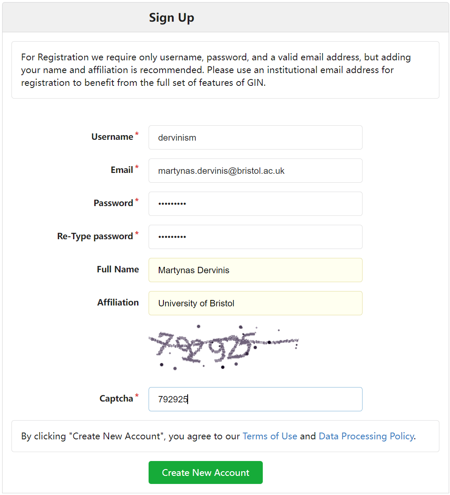{kind=link}
Figure 1. Register your Account
If you are using the public GIN, you will be asked to verify your email. Once this is done, you can start using GIN.
Create a repository#
A research data repository is a structured folder containing your research raw data, metadata, derived data and any other files related to the research project. In order to create a repository, click the + icon on the right of the top menu.

Figure 2. Create a repository
You should be able to see the webform below.

Figure 3. Enter repository details
The owner of a repository can either be you or an organisation. If you assign the ownership to an organisation, make sure that you are a member of that organisation and have all required user rights to manipulate the repository as intended. Note that, by default, newly created repositories are always private. You can change the visibility of your repository at a later stage.
You can indicate which files and folders of the local instance of the repository should not be synchronised with the remote repository by providing a gitignore file. You can also select a .gitignore file template to be initialised with your repository and edit it later. You can chose the type of license you want to associate with your repository, as well as add a README file to your repository. It is useful to include a README file and use it to explain the structure of your repository and how to use it. md files use the Markdown language to edit and style text documents with a guide on how to use it provided here.
Once you are happy with the information you entered, click the green Create Repository button at the bottom of the web form. This will initialise a repository together with the .gitignore, license, and README files (if you selected so).
Find a repository#
The easiest way to find a repository is to click the Dashboard entry on the left of the top menu.
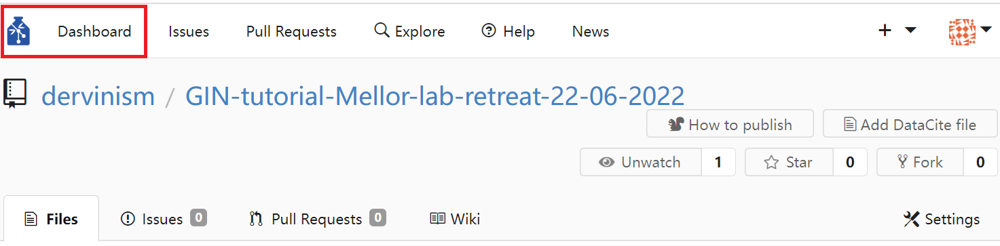{kind=link}
Figure 4. Where to find your dashboard
Repositories that you either own or are collaborating on will be shown in the repositories section on the right side of the Dashboard.
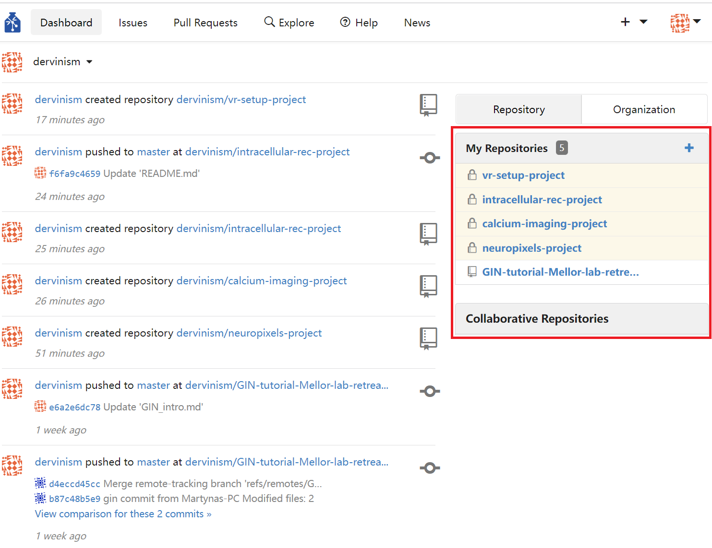{kind=link}
Figure 5. Your repositories section
Other repositories that belong to you or any other researcher using the same GIN network can be found by clicking the Explore entry at the top menu. Other researchers’ repositories will only be visible if the repository owners listed them as discoverable via Explore.
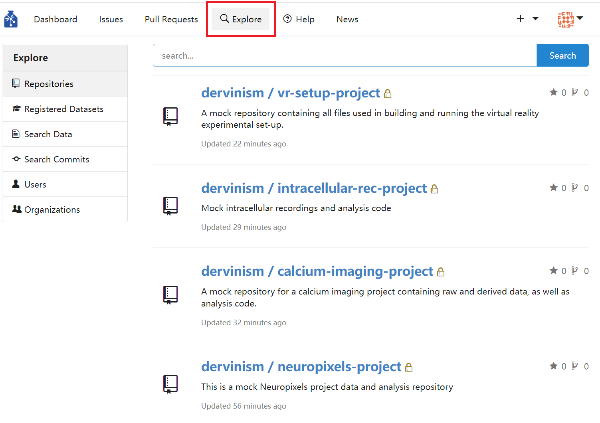{kind=link}
Figure 6. Search all repositories visible to you
In cases where you are the owner of a repository, its name will be preceded by your account name and a forward-leaning slash. Repositories can also be owned by organisations and in that case their names will be preceded by the name of the owner organisation.
Update a repository (upload files)#
A repository can be updated (or new files to a repository can be added) by clicking the blue Upload file button located at the main page of your repository. This action of bringing the state of the remote repository in line with the state of the local copy of it that you are working with is also known as pushing changes.
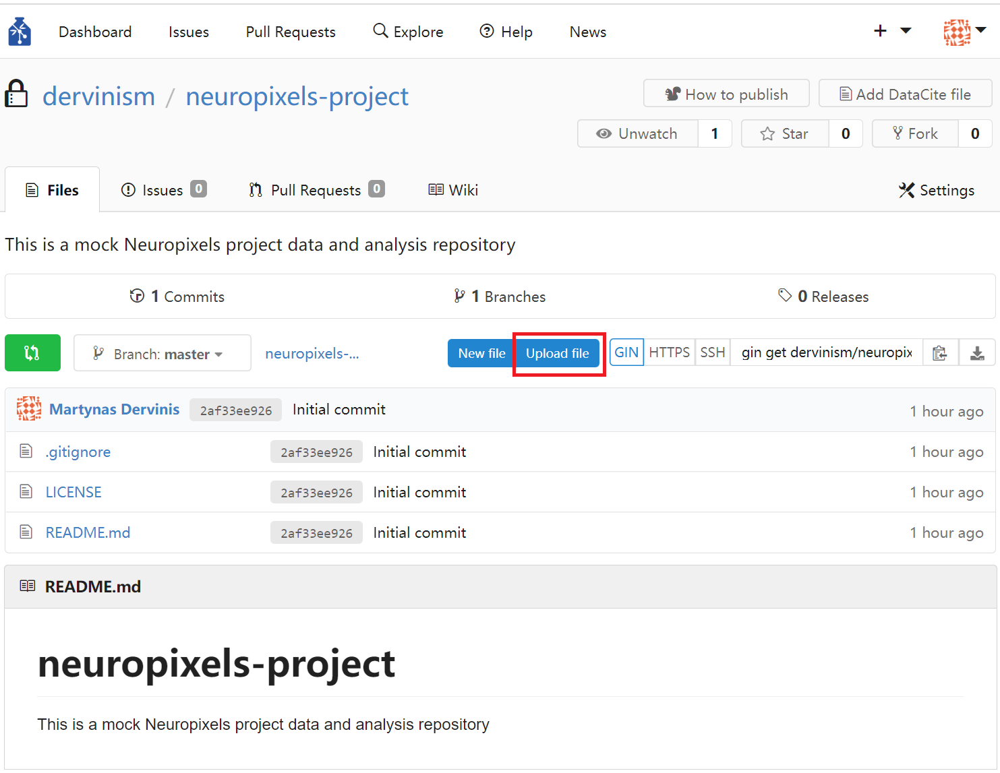{kind=link}
Figure 7. Update the repository by uploading files
Clicking the Upload files button should bring you to the files upload page shown below.

Figure 8. Upload files page
As indicated in the area delineated by a blue dashed line, you can only upload files that are not larger than 10 GB and no more than 100 files at once. This is a web interface limitation that command line tools do not have. You can drag and drop files and folder to the area or you can click on the area and upload files using a pop-up dialog box. If a file cannot be uploaded, a grey x symbol would appear over the file and an error message would be displayed if you hover above the file icon with your mouse.
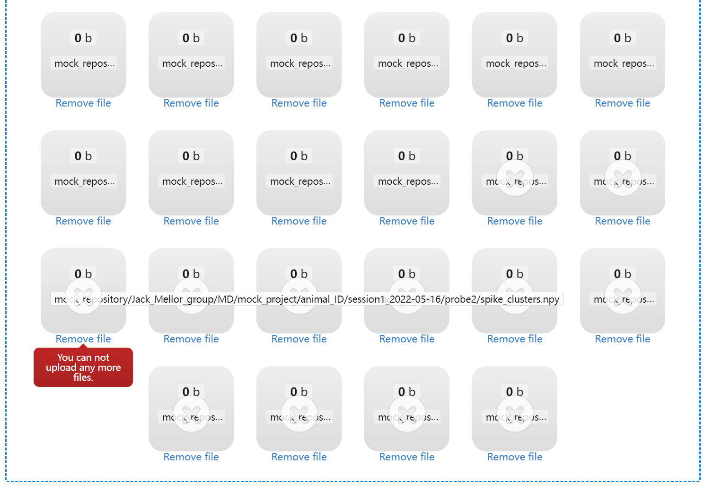{kind=link}
Figure 9. Files that cannot be uploaded are marked by ‘X’
If you want to uppload files to a different folder in your repository, navigate to its location by opening folders in its path and click on the blue Upload files button again or edit the path in the Files upload page. Folder names should be separated by ‘/’.
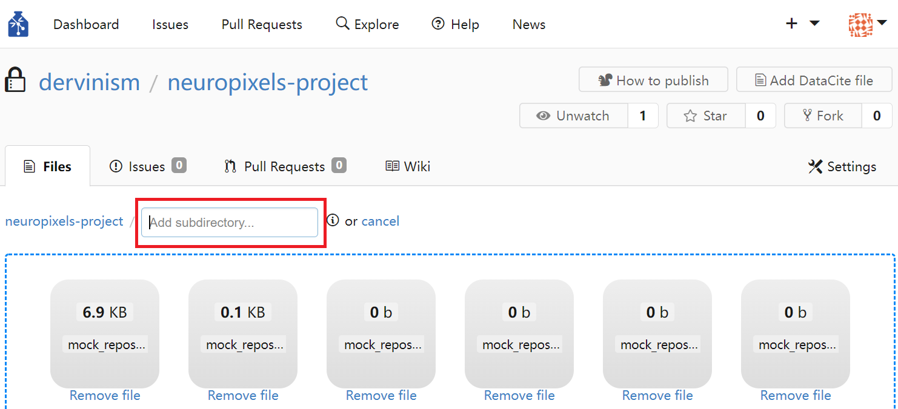{kind=link}
Figure 10. Change the upload folder by editing the path
In order to finalise your upload, write down a commit message. The message should be succinct but informative enough so that you or your collaborators could identify changes that were introduced to the repository. Finally, press the green Commit changes button.
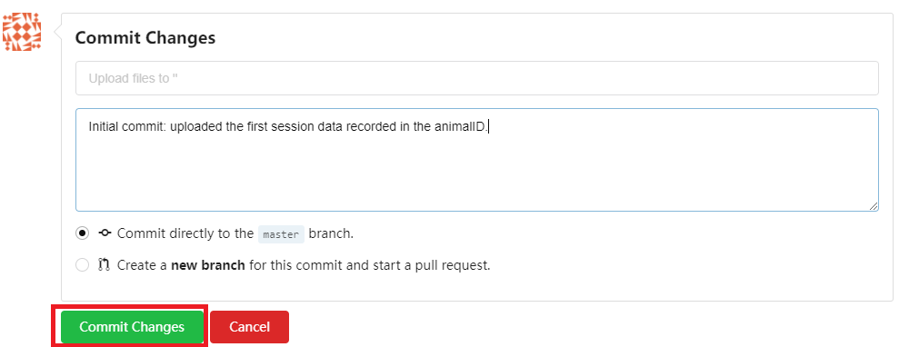{kind=link}
Figure 11. Commit changes to the repository
Download a repository (clone a repository)#
A repository can be downloaded (cloned) by navigating to the main repository page and clicking the Download repository button.

Figure 12. Download a repository
You will be prompted to choose the type of the archived format the repository to be downloaded as. Zip format is common in Windows and MacOS systems, while tarball (tar.gz) is commonly used on Linux systems, but the latter can equally work well with zip files.
Download a file#
Downloading the entire repository might not be what you are looking for and instead you need to download a particular individual file. In order to do that, navigate to the location of the file inside the repository, click the file you want, and click the Download button to the right of the file or the Download link underneath the file. The file will be downloaded uncompressed or opened in your browser (click ‘Save As…’ or Ctrl+S to save it).
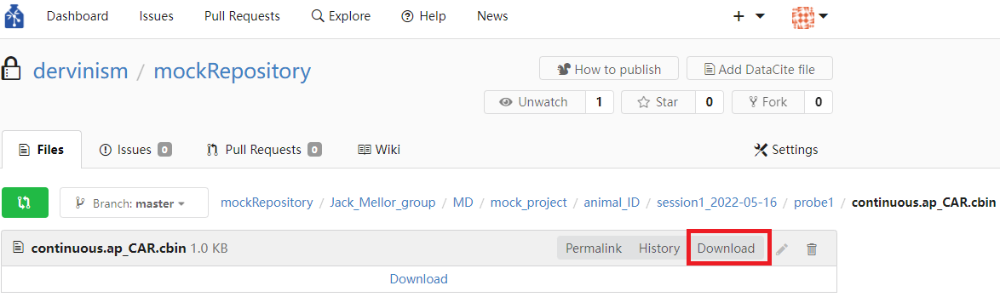{kind=link}
Figure 13. Download a file
Delete a file#
Delete an unwanted file by navigating to the file location inside the repository and click the Rubish bin icon to the right of the file. Note that you will be brought to the Commit changes page similar to the one used for uploading files. Write down a commit message indicating that the file is being deleted.
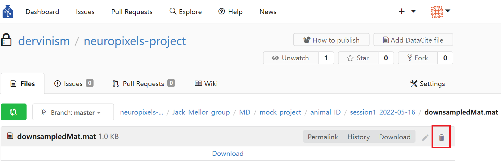{kind=link}
Figure 14. Delete a file
Create a text file#
You can create text files using GIN web interface. In order to do that, navigate to the location inside the repository where you want to create a new file and click the blue New file button.
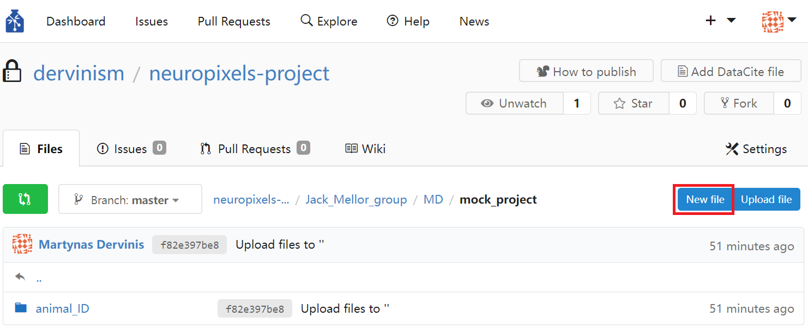{kind=link}
Figure 15. Create a text file
Clicking the button whould bring you to the file editing page. In the path entry specify the extended path (if needed) and the name of the file (e.g., project-description.md). If you specify the extension of the file as .md, you would notice a file editing menu appearing. The editing tools are specifically designed for Markdown files. You can read more about using Markdown to edit text files in the Markdown Guide.
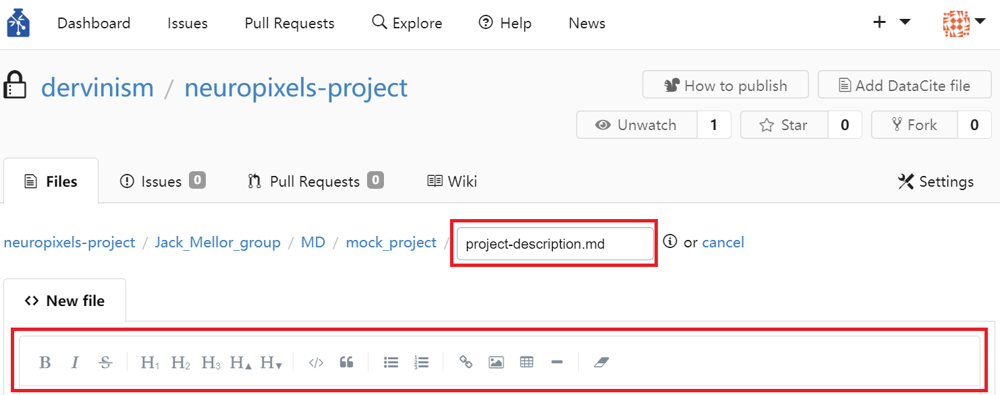{kind=link}
Figure 16. Name and edit a text file
When you finish editing the file, write down a commit message at the bottom of the page and click the green Commit changes button. If you edit the file in the future, you would need to commit the file with a new message. If you change its name or path, the file would be renamed or moved to the new location accordingly. You are not allowed to overwrite an existing file by creating another text file with the same name and in the same location.
Rename a repository#
You can rename a repository in the repository settings. In your repository page click on the Settings pane located in the top right corner of the page.
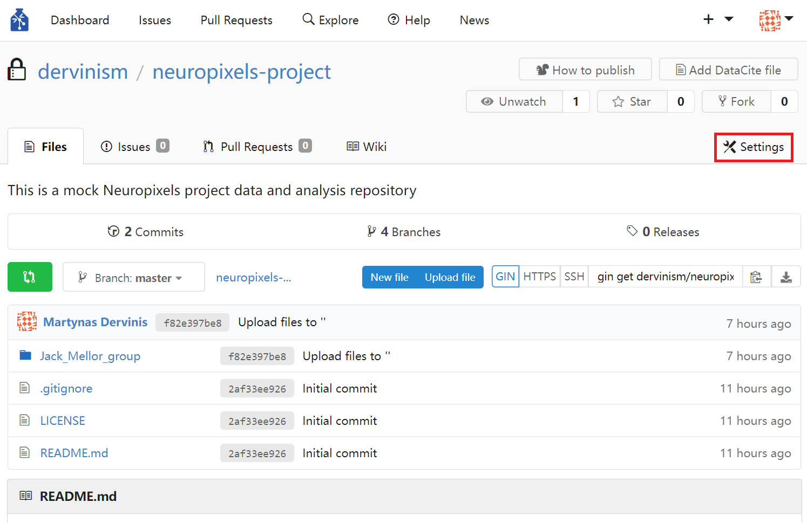{kind=link}
Figure 17. Locating repository settings
Inside the Settings/Options page change the original repository name to a new one and click the green Update Settings button.
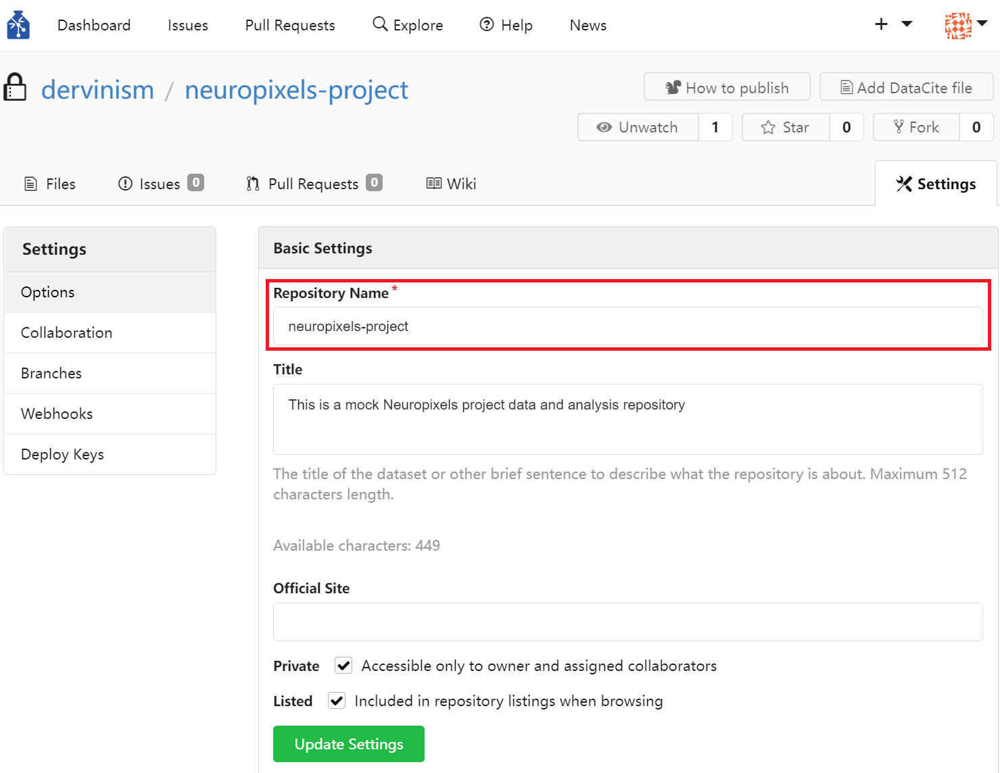{kind=link}
Figure 18. Rename a repository
Change the visibility of a repository#
When you initialise a new repository, its visibility is set to private by default. At some point you may want to change the visibility. This is especially relevant when you are about to publish the output of your research project. You can change the visibility of a repository in the repository settings. In your repository page click on the Settings pane located in the top right corner of the page (Figure 17). Inside the Settings/Options page untick the Private box. You can also change whether the repository is discoverable on the GIN network via the Explore top menu entry (Figure 6). You just need to tick/untick the Listed box. Do not forget to update settings by clicking the green Update Settings button.
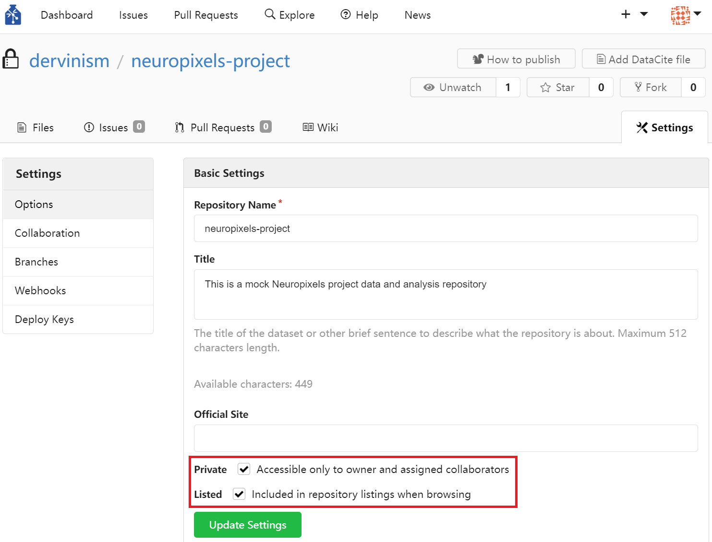{kind=link}
Figure 19. Repository visibility